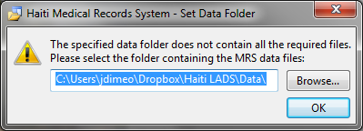

This lightweight system is designed to be used to track basic medical records for clinics in areas with very little resources or infrastructure. It was originally designed and built for use in Haiti.
Currently, several churches in the Grace Network use this system, in parternship with community health workers from Vwazen Nou to conduct medical clinics for communities around Port-au-Prince several times a year. Please contact haiti.mrs@gmail.com with any questions.
The system contains the following components:
Download and run the following executables to run the latest version of the software:
The only prerequisite is that you have Java 8 or later installed on the computer. Note that Windows may be a 64-bit, but the installed version of Java may be 32-bit.
When the program first starts, it tries to find the database file used
to store the records. It will prompt you to identify the folder containing
a valid database file:

Use this dialog to select the directory containing the database file
master.db (see next section).
The medical records are stored in a SQLite database file on each computer that is running the software. You can download a template database file here:
master.db (1 MB)
This file is mostly blank, but contains a snapshot of the FDA's formulary as well as some commonly used "standard" prescriptions (to facilitate fast entry of some of the most common and/or least complex prescriptions). Once you have downloaded this file, select the folder to which you downloaded the file when you first start the program (see above).
The simplest way to use this system is with a single computer writing and reading records from this file. However, the system is designed to also be used across multiple computers concurrently. When the program starts, it copies the master database file to a folder that is unique to the computer and the computer's user. In this way, many computers can be editing the data in their own copies of the database without affecting the master file (and without requiring an Internet connection). However, you will eventually need to push the changes of a given copy back up to the master so that it can be viewable by everyone else.
To publish or push a user's changes back to the master file, download the following two files and run the executable:
This tool finds any changes to the data compared to the master, and replicates and saves those changes in the master file, as well as doing some data clean up, like removing duplicates. The details of what this tool does are out of the scope of this document, so please contact haiti.mrs@gmail.com with any questions.
We recommend using a file-syncing service like Dropbox, Box, SugarSync, or Google Drive to share, as well as back up, these database files. This allows the person who is managing the database files and running the merge tool to automatically receive everyone's changes in their copies of the database the next time each computer can connect to the Internet.
Please note that this file is not password protected and this system does not have any access restrictions to any information stored within it.
The software is designed to be used with printed forms for use during a clinic that capture patient information as well as the encounter with the provider. These forms mirror the kind of data captured by each screen in the software:
The directives are stickers that instruct patients on how to take their medicine. These are designed to be easily translated into any language (including future plans for pictorial stickers) but still easy for a provider to use to communicate instructions to the patient. This is achieved by keeping the order and type of "blanks" consistent regardless of the language (in this case, Kreyol). You can download the directive templates here (designed to print on standard 1" x 4" and 2" x 4" adhesive labels):
Directives (487 KB zipped)
The following describes at a high level how this system is used in the clinics we run in parternship with churches in Haiti:
First, Haitian community health workers check in patients into the clinic. They have an index (often printed on paper, or if there are enough computers or tablets access to the software directly) of all patients in the system with first name, surname, address, etc. They fill out Patient Information form (Enformasyon Medikal). If the patient exists in the system, they record the patient's ID at the top of the form.
Then, the health workers and/or American volunteers measure the vitals of each patient. They fill out the top section of the Prescription Sheet (Preskripsyon). This form is mainly in Kreyol, but Americans can use the units to know where to fill each vital. Metric or Standard units can be used- the software will automatically convert to metric.
Then the patient is seen by the health care provider/doctor. We usually have American doctors working with translators, but we have also partnered with Haitian doctors. Providers usually have a computer with them running the EMR where they can quickly look up existing patients and the summary of their information using the patient ID. They will fill out the rest of the form, prescribing one or more medications. Each prescription consists of a standard "diagnosis code" (from the table at the bottom of the first page of the prescription sheet), a treatment/medicine with quantity/dosage, and instructions on how to take the medicine. Since swallowed pills are the most common, the most prescription "slots" are provided for those kinds of medicines, then chewable pills, drops/liquids, creams, and so on. These instructions have been standardized into "directives"- this facilitates efficient filling of prescriptions by laymen in the pharmacy, and easy translation between English and the language of the patients.
The patient's prescription sheet is filled by the pharmacy- we put each medicine in its own Ziploc bag, and affix a sticker with that medicine's instructions to the bag, and then combine all the medicines into one large gallon-size Ziploc. Patients can receive anywhere from a single medication to up to about a dozen in one visit. We treat both acute and chronic conditions, and the chronic patients are the biggest reason why we implemented this EMR.
Once the patient's bag of medicines have been prepared, the bag and the sheet are sent to the EMR/data entry. One or more people (Haitian and/or American) are running the software on one or more computers- they create new patients or update the existing patient's basic information from the update form, and then they add each prescription into the system. We find they also function as "Quality Assurance" and double-check the pharmacy- since they have to look up the exact medicine name and are seeing how many pills the patient is receiving, they can often catch errors or if the pharmacy forgot to fill a prescription on the sheet.
The medicine is then given to the patient by a native Kreyol speaker who can go through each medicine and explain/show how to take it. Finally, each patient is prayed for before they leave the clinic.
Our main goal is enabling our sister Haitian church to do relational evangelism, so every station involves both Americans and trained Haitian health workers that are also members of church so that it's a partnership. We try to make sure each patient feels that they are being cared for and loved by the clinic workers (both Haitian and American) with which they interact. But we also want to make sure the patients are receiving excellent care, which is why we started the EMR. Particularly for chronic patients (like hypertension and diabetes), we wanted to track the effect our care was having over time.
Thank you for your interest in our medical records system.